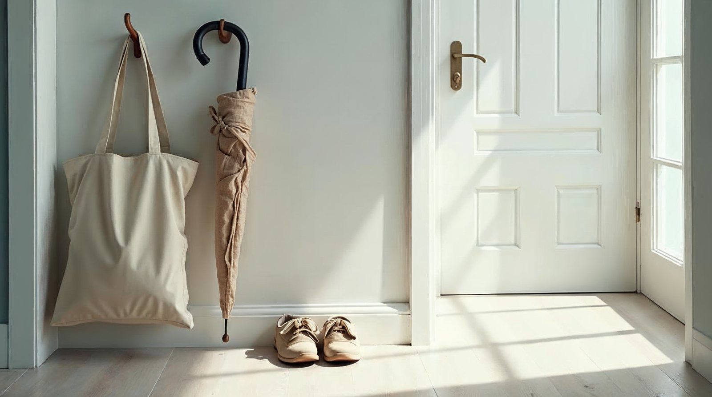
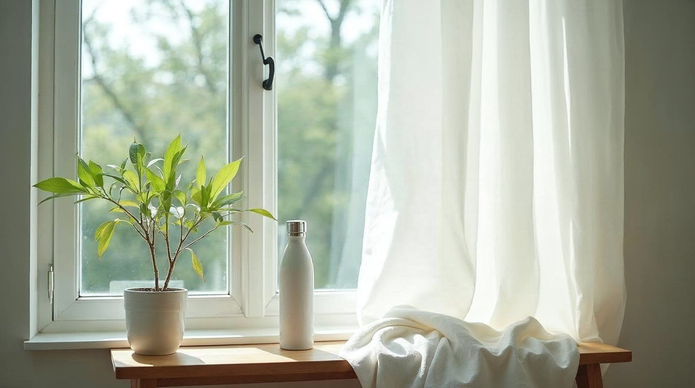
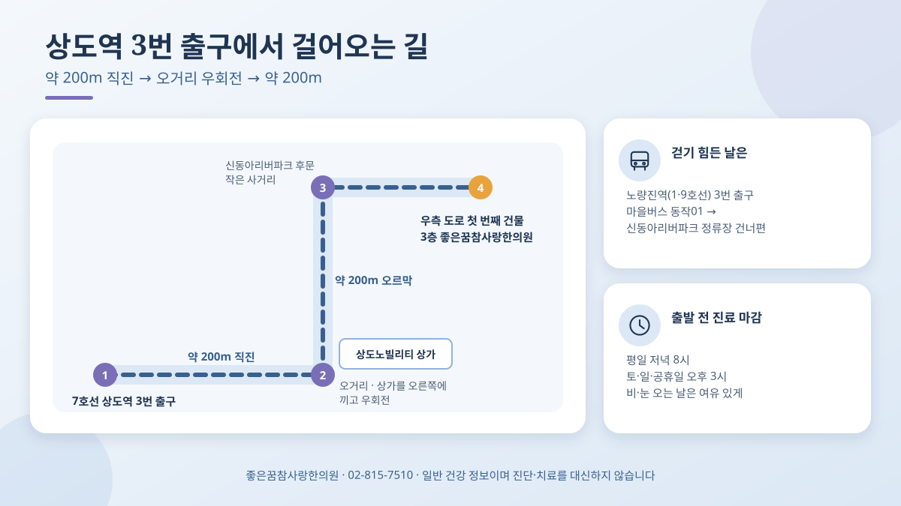

이종호 한의사 감수좋은꿈참사랑한의원 대표원장 (한의사 면허번호 19769)발행 2026-11-23 · 수정 2026-11-26
이 글의 차례
- 왜 오거리와 오르막길을 미리 알아 두면 좋을까요
- 걸어오는 순서
- 길을 확인하는 방법
- 출퇴근길에 들르실 때 몸은 어떤 상태일까요?
- 왜 같은 길도 날마다 다르게 느껴질까요
- 걷기 전에 해 볼 수 있는 가벼운 준비
- 오르막길은 어떻게 걸으면 덜 힘들까요?
- 왜 오르막에서 무릎 앞쪽과 종아리가 당길까요
- 돌아가는 내리막은 오르막보다 조심해 주세요
- 길을 잘못 든 것 같을 때는 어떻게 하나요?
- 신발은 어떻게 고르면 좋을까요?
- 걷기 전에 내 몸 상태를 점검해 보세요
- 먼저 이렇게 여쭙니다
- 한의원에서 함께 살필 수 있는 경우
- 어르신과 함께 걸어오실 때는
- 비 오는 날이나 해가 진 뒤에 오실 때
- 평소에 언덕 걷기를 연습해 보면 어떨까요?
- 걸어오는 동안의 불편은 이렇게 기록해 오세요
- 오시기 전에 챙겨 두면 좋은 것
- 이런 증상은 먼저 확인이 필요합니다
상도역 3번 출구로 나와 약 200m 직진, 오거리에서 우회전해 약 200m 올라오면 됩니다. 7호선 상도역에서 내리면 3번 출구로 나오시면 됩니다. 걷는 순서를 단계별로 적습니다.
상도동은 언덕이 많은 동네입니다. 오래 사신 분들은 익숙하시겠지만, 처음 오시는 분은 오거리에서 우회전하고 나서 "생각보다 오르막이네" 하고 숨을 고르시곤 합니다. 무릎이 시큰한 날이라면 그 200m가 꽤 길게 느껴지지요.
아픈 몸을 이끌고 언덕을 올라오시는 마음을 생각하면, 오시는 길만큼은 조금이라도 편하게 안내해 드리고 싶습니다. 그래서 길 순서와 함께 오르막을 덜 힘들게 걷는 요령, 돌아가는 내리막에서 조심할 점까지 함께 적었습니다.
왜 오거리와 오르막길을 미리 알아 두면 좋을까요
- 처음 오시면 오거리에서 방향이 헷갈리기 쉬워, 상도노빌리티 상가를 기준으로 삼으면 편합니다.
- 우회전한 뒤에는 약 200m를 올라오는 길이라 무릎이나 허리가 불편한 분은 천천히 오시는 것이 좋습니다.
- 비나 눈이 오는 날에는 걷는 시간이 더 걸릴 수 있어 진료 마감 시각을 고려해 출발하세요.
- 처음에는 건물 이름보다 신동아리버파크 후문 사거리를 찾는 것이 더 쉽습니다.
- 상도역은 7호선이라 장승배기나 숭실대입구 쪽에서도 지하철로 오기 편합니다.

걸어오는 순서
- 상도역 3번 출구로 나와 약 200m를 직진해 오거리까지 갑니다.
- 상도노빌리티 상가를 오른쪽에 끼고 우회전합니다.
- 약 200m를 올라오면 신동아리버파크 후문이 있는 작은 사거리가 나옵니다.
- 우측 도로 쪽 첫 번째 건물 3층이 좋은꿈참사랑한의원입니다.
길을 확인하는 방법
- 홈페이지의 오시는 길에서 네이버 지도나 구글 지도 링크를 열 수 있습니다.
- 처음이라 헷갈리면 전화로 현재 위치를 말씀해 주세요.
- 걷기 힘든 날은 노량진역에서 동작01 마을버스를 타는 방법도 있습니다.
출퇴근길에 들르실 때 몸은 어떤 상태일까요?
출근길에 들르시면 몸이 아직 덜 풀린 상태이고, 퇴근길에 들르시면 하루 동안 쌓인 긴장이 가장 많은 상태입니다. 어느 쪽이든 그 시간대의 몸을 보여 주시는 것이라 진료에 도움이 됩니다. 다만 그 상태를 알고 오시면 길을 걸을 때도 몸을 조금 더 배려하실 수 있습니다.
예를 들어 하루 종일 모니터 앞에 앉아 있다 퇴근하는 경우, 고관절과 허리가 굳은 채로 오르막을 오르게 됩니다. 그럴 때는 회사를 나서기 전에 자리에서 일어나 허리를 천천히 펴고 두세 번 기지개를 켜 보세요. 오르막 첫걸음이 한결 가벼워집니다.
평일 진료는 저녁 8시까지입니다. 퇴근 뒤 상도역에 도착하는 시각이 늦어질 것 같다면 출발 전에 전화로 접수 가능 여부를 여쭤 보세요. 서둘러 뛰어오시는 것보다 미리 알리고 천천히 오시는 편이 몸에도 좋습니다.
왜 같은 길도 날마다 다르게 느껴질까요
어제는 가볍게 올라온 언덕이 오늘은 유난히 힘들게 느껴질 때가 있습니다. 길은 그대로인데 몸이 다른 것이지요. 잠을 설친 날, 끼니를 거른 날, 하루 종일 긴장한 날에는 다리에 힘이 덜 들어가고 숨도 쉽게 찹니다.
몸이 찬 날도 그렇습니다. 추운 날 근육은 잔뜩 움츠러들어 있어, 갑자기 오르막을 오르면 종아리나 허벅지가 쉽게 당깁니다. 저는 잘 먹고, 잘 자고, 잘 싸고, 마음 편하고, 몸 따뜻하게, 이 다섯 가지가 회복의 바탕이라고 말씀드리는데, 언덕길을 오를 때 느끼는 힘듦에도 이 다섯 가지가 그대로 드러납니다.
그래서 오는 길이 유난히 힘들었다면 그날의 잠과 식사도 함께 말씀해 주세요. 길에서 느낀 몸의 차이가 진료실에서 살필 좋은 실마리가 됩니다.
걷기 전에 해 볼 수 있는 가벼운 준비
지하철에서 내려 바로 오르막을 오르기보다, 3번 출구를 나와 오거리까지 200m 평지를 걷는 동안 몸을 천천히 데워 보세요. 처음 몇십 걸음은 평소보다 느리게 걷고, 팔을 가볍게 흔들어 어깨를 풀어 주면 됩니다.
오거리에서 우회전하기 전, 잠시 멈춰 한쪽 발뒤꿈치를 들었다 내리기를 몇 번 해 보세요. 종아리가 살짝 데워진 상태에서 오르막을 시작하면 당기는 느낌이 덜할 수 있습니다. 아픈 곳이 더 불편해지는 동작은 바로 멈추시면 됩니다.
오르막길은 어떻게 걸으면 덜 힘들까요?
오르막에서는 보폭을 평소보다 반쯤 줄여 보세요. 큰 걸음으로 성큼성큼 오르면 허벅지 앞쪽과 무릎에 한 번에 큰 힘이 실립니다. 작은 걸음으로 자주 디디면 같은 거리를 가도 무릎이 받는 부담이 나뉩니다.
발은 뒤꿈치부터 쿵 하고 내딛기보다 발바닥 전체로 땅을 누르듯 디뎌 보세요. 상체는 허리를 꺾지 말고 몸 전체를 아주 살짝 앞으로 기울이면 됩니다. 고개를 푹 숙이고 땅만 보며 오르면 목과 등이 굳으니, 시선은 몇 걸음 앞을 보세요.
팔은 몸 옆에서 가볍게 앞뒤로 흔들어 주세요. 팔을 흔들면 걸음에 박자가 생기고, 다리만으로 몸을 끌어올리는 부담이 조금 줄어듭니다. 양손에 짐을 무겁게 들고 오르는 것은 피하시고, 짐이 있다면 등에 메는 가방에 나눠 담아 보세요.
숨이 차면 잠시 멈춰 서서 숨을 고르셔도 됩니다. 서두를 이유가 없습니다. 오르막 중간에 한 번 쉬어 가는 것을 처음부터 계획에 넣고 출발 시각을 잡으시면 마음도 한결 여유롭습니다.
왜 오르막에서 무릎 앞쪽과 종아리가 당길까요
오르막을 오를 때는 몸을 위로 밀어 올려야 해서 허벅지 앞 근육과 종아리 근육이 평지보다 훨씬 많이 일합니다. 허벅지 앞 근육은 무릎뼈를 거쳐 정강이로 이어져 있어, 이 근육이 지치거나 뻣뻣하면 무릎 앞쪽이 시큰하게 느껴질 수 있습니다.
종아리도 마찬가지입니다. 발목을 굽힌 채 체중을 밀어 올리느라 종아리 근육과 아킬레스힘줄이 길게 늘어난 상태로 힘을 씁니다. 예를 들어 평소 오래 앉아 일해서 종아리가 굳어 있는 경우, 짧은 오르막에서도 종아리가 금세 당기기 쉽습니다.
허리가 불편한 분은 오르막에서 몸을 앞으로 숙이면 오히려 편하다고 느끼기도 하고, 반대로 더 불편하다고 느끼기도 합니다. 어느 쪽인지가 몸 상태를 살피는 데 중요한 단서가 되니, 진료 때 꼭 말씀해 주세요.
돌아가는 내리막은 오르막보다 조심해 주세요
진료를 마치고 상도역으로 돌아가실 때는 같은 길이 내리막이 됩니다. 많은 분이 오르막보다 내리막을 쉽게 생각하시지만, 무릎에는 내리막이 더 부담일 수 있습니다. 내려갈 때는 허벅지 앞 근육이 브레이크처럼 몸을 붙잡아 주어야 하기 때문입니다.
내리막에서는 보폭을 더 작게, 속도는 더 천천히 하세요. 무릎을 쭉 편 채로 내려가기보다 살짝 굽힌 상태로 디디면 충격이 덜합니다. 침을 맞은 날에는 과음과 무리한 운동을 피하시고, 돌아가는 길도 서두르지 마세요.
내리막에서 무릎이 휘청이거나 시큰해지면 잠시 멈추고, 길가에 기대어 서서 무릎을 가볍게 몇 번 굽혔다 펴 보세요. 그래도 불편하면 남은 길은 더 천천히, 옆으로 비스듬히 내려가는 것도 방법입니다. 이런 일이 있었다면 다음 진료 때 꼭 알려 주세요.
길을 잘못 든 것 같을 때는 어떻게 하나요?
오거리에서 가장 많이 헷갈립니다. 우회전한 뒤 상도노빌리티 상가가 내 오른쪽에 있었는지 떠올려 보세요. 상가를 오른쪽에 끼고 돌았다면 맞게 오신 것이고, 길이 오르막으로 이어집니다. 평지가 계속되거나 내리막이라면 방향을 다시 확인해 보세요.
헤매다 보면 마음이 급해져 걸음이 빨라지고, 그만큼 무릎과 허리에도 힘이 더 들어갑니다. 잠시 멈춰 지도 앱을 확인하시거나, 전화로 지금 보이는 간판이나 건물을 말씀해 주세요. 길을 함께 확인해 드리겠습니다.
신발은 어떻게 고르면 좋을까요?
언덕길을 걸어오실 때는 밑창이 너무 얇지 않고, 발볼이 넉넉하며, 뒤꿈치를 잘 감싸 주는 신발이 편합니다. 굽이 높은 신발이나 뒤가 트인 슬리퍼는 오르막에서 발목이 흔들리고, 내리막에서는 발가락이 앞으로 쏠리기 쉽습니다.
출근 복장 때문에 구두를 신어야 한다면, 진료가 있는 날만이라도 가방에 운동화를 넣어 두었다가 갈아 신어 보세요. 발바닥이나 무릎이 불편한 분에게는 이 작은 차이가 생각보다 크게 느껴집니다.
양말도 살펴보세요. 너무 얇은 양말은 발바닥에 전해지는 충격을 그대로 받고, 너무 조이는 양말은 오래 걸을 때 발이 붓고 저리게 할 수 있습니다. 발에 잘 맞는 도톰한 양말 하나가 언덕길을 한결 편하게 만듭니다.
걷기 전에 내 몸 상태를 점검해 보세요
아래 가운데 해당하는 것이 있다면 걸어오실 때 더 천천히 오시고, 진료 때 함께 말씀해 주세요.
- 계단이나 언덕을 오를 때 무릎 앞쪽이 시큰하다
- 조금만 걸어도 종아리가 당기거나 발바닥이 아프다
- 오래 걸으면 엉덩이나 다리가 저려 잠시 쉬어야 한다
- 내리막에서 무릎이 휘청이거나 불안하다
- 걸은 다음 날 허리가 묵직하다
특히 걷다가 다리가 저려 쉬었다가 다시 걸으면 괜찮아지는 경우라면, 그 거리와 쉬는 시간을 기억해 두세요. 몇 m쯤 걸으면 저리고 몇 분 쉬면 풀리는지가 진료실에서 살필 때 중요한 정보가 됩니다.
먼저 이렇게 여쭙니다
처음 오시면 진료실에서 이런 것부터 여쭙습니다.
- 지금 가장 불편한 곳과 언제부터 그랬는지
- 걷거나 오르막을 오를 때 불편한 동작이 있는지
- 복용 중인 약과 받아 둔 검사 결과가 있는지

한의원에서 함께 살필 수 있는 경우
- 오는 길의 오르막이나 계단에서 무릎·발이 아픈 경우 어떤 걸음에서 아픈지 함께 살핍니다.
- 출퇴근길에 목·어깨가 뻣뻣한 경우 자세와 근육의 긴장을 함께 살핍니다.
- 출퇴근길에 오래 걸어 발바닥이나 종아리가 아픈 경우 신발과 걷는 습관을 함께 살핍니다.
처음 오시면 접수한 뒤 원장이 모든 분께 맥부터 짚으며 불편한 곳과 생활을 여쭙습니다. 필요하면 혀와 배를 살피거나 초음파로 확인하고, 상태에 맞는 치료와 다음 방문 안내로 이어집니다. 다시 오시면 지난번 이야기부터 이어서 여쭙습니다.
언덕을 막 올라오셔서 숨이 차거나 맥이 빠르게 뛰고 있다면, 잠시 앉아 쉬신 뒤에 맥을 짚습니다. 몸이 진정된 뒤의 맥이 평소의 몸을 더 잘 보여 주기 때문입니다. 그러니 도착하자마자 서두르지 마시고 편히 숨부터 고르세요.
숨을 고른 뒤에는 서고, 걷고, 앉는 동작을 직접 확인합니다. 오는 길에 불편했던 동작이 있다면 그 동작부터 해 보며 어디가 어떻게 불편한지 함께 살핍니다. 통증 부위를 눈으로 확인할 필요가 있다고 판단되면 초음파로 살피기도 합니다.
어르신과 함께 걸어오실 때는
부모님을 모시고 오신다면 어르신 걸음에 맞춰 시간을 넉넉히 잡아 주세요. 오르막에서는 어르신의 옆이나 약간 뒤에서, 내리막에서는 약간 앞에서 걸으시면 혹시 몸이 기울 때 받쳐 드리기 좋습니다.
지팡이를 쓰시는 분이라면 오르막에서는 지팡이를 먼저 짚고 덜 아픈 다리를 올린 뒤 아픈 다리를 따라 올리고, 내리막에서는 지팡이와 아픈 다리를 함께 먼저 내딛는 방식이 덜 부담스럽습니다. 걷기가 많이 힘드신 날은 택시나 차를 이용하셔도 됩니다.
비 오는 날이나 해가 진 뒤에 오실 때
비나 눈이 오는 날은 오르막과 내리막이 미끄럽습니다. 밑창이 미끄럽지 않은 신발을 신고, 우산을 든 손 반대편에 짐을 들어 몸이 한쪽으로 기울지 않게 해 주세요. 평소보다 10분쯤 일찍 출발하시면 서두르지 않아도 됩니다.
평일은 저녁 8시까지 진료하니 해가 진 뒤에 걸어오시는 분도 많습니다. 어두울 때는 발밑이 잘 보이지 않으니 휴대폰을 보며 걷지 마시고, 길 순서를 미리 머릿속에 그려 두세요. 오거리의 상도노빌리티 상가를 기준으로 삼으시면 밤에도 방향을 잡기 쉽습니다.
평소에 언덕 걷기를 연습해 보면 어떨까요?
상도동처럼 언덕이 많은 동네에 사신다면, 언덕길은 피해야 할 길이 아니라 다리 힘을 기르는 연습장이 될 수 있습니다. 다만 처음부터 길게 오르기보다 짧은 언덕 하나를 정해 천천히 오르내리는 것부터 시작해 보세요.
오를 때 숨이 조금 차지만 옆 사람과 대화할 수 있을 정도면 알맞습니다. 다음 날 무릎이나 종아리가 불편하지 않다면 조금씩 거리를 늘리고, 불편이 남는다면 거리를 줄이거나 하루 쉬어 가세요. 몸이 보내는 반응을 보며 양을 조절하는 것이 오래 이어 가는 요령입니다.
무릎이 시큰한 날에는 언덕 대신 평지를 걸으셔도 됩니다. 걷는 양과 다음 날 몸의 반응을 적어 오시면 진료 때 어느 정도가 지금 몸에 맞는지 함께 정해 보겠습니다.
걸어오는 동안의 불편은 이렇게 기록해 오세요
어느 지점에서 어떻게 불편했는지를 적어 오시면 도움이 됩니다. 예를 들어 "오거리까지는 괜찮았는데 오르막 중간부터 오른쪽 무릎 앞이 시큰, 한 번 쉬고 올라옴"처럼 적으면 됩니다.
평소 하루에 얼마나 걷는지, 계단과 언덕을 얼마나 오르내리는지도 함께 적어 주세요. 걷는 양을 알면 집에서 해 볼 운동이나 쉬는 방법을 그분의 하루에 맞춰 말씀드릴 수 있습니다.
오시기 전에 챙겨 두면 좋은 것
- 지도 앱에서 좋은꿈참사랑한의원을 미리 검색해 두기
- 편한 신발
- 복용 중인 약 목록과 불편한 곳 메모
- 진료 마감(평일 저녁 8시, 주말·공휴일 오후 3시)을 고려한 출발 시각
- 비나 눈이 오는 날에는 미끄럽지 않은 신발과 우산
이런 증상은 먼저 확인이 필요합니다
- 걷는 도중 가슴 통증이나 숨 가쁨이 생긴 경우
- 무릎이나 발목을 접질려 체중을 싣기 어려운 경우
이런 신호가 있으면 한의원보다 가까운 병원이나 응급실을 먼저 찾으세요.

여쭙는 것
- 지금 가장 불편한 곳과 언제부터 그랬는지
- 걷거나 오르막을 오를 때 불편한 동작이 있는지
- 복용 중인 약과 받아 둔 검사 결과가 있는지
한의원에서 함께 살필 것
- 오는 길의 오르막이나 계단에서 무릎·발이 아픈 경우 어떤 걸음에서 아픈지 함께 살핍…
- 출퇴근길에 목·어깨가 뻣뻣한 경우 자세와 근육의 긴장을 함께 살핍니다.
- 출퇴근길에 오래 걸어 발바닥이나 종아리가 아픈 경우 신발과 걷는 습관을 함께 살핍니다.
먼저 확인이 필요한 신호
- 걷는 도중 가슴 통증이나 숨 가쁨이 생긴 경우
- 무릎이나 발목을 접질려 체중을 싣기 어려운 경우
한눈에 보는 표
| 구분 | 핵심 |
|---|---|
| 여쭙는 것 | 지금 가장 불편한 곳과 언제부터 그랬는지 걷거나 오르막을 오를 때 불편한 동작이 있는지 |
| 한의원에서 함께 살필 것 | 오는 길의 오르막이나 계단에서 무릎·발이 아픈 경우 어떤 걸음에서 아픈지 함께 살핍니다. 출퇴근길에 목·어깨가 뻣뻣한 경우 자세와 근육의 긴장을 함께 살핍니다. |
| 먼저 확인이 필요한 신호 | 걷는 도중 가슴 통증이나 숨 가쁨이 생긴 경우 무릎이나 발목을 접질려 체중을 싣기 어려운 경우 |
자주 묻는 질문
상도역 몇 번 출구로 나오나요?
7호선 상도역 3번 출구입니다.
걸어서 얼마나 걸리나요?
오거리까지 약 200m, 우회전 후 약 200m이며, 걸음 속도에 따라 다르니 지도 앱으로 확인하세요.
건물 몇 층인가요?
신성빌딩 3층·5층을 쓰며, 입구는 3층입니다.
자가용으로 오면 어디에 세우나요?
주차 가능 여부와 위치는 방문 전 02-815-7510으로 전화하시면 안내해 드립니다.
오르막이 힘들면 다른 길이 있나요?
1·9호선 노량진역 3번 출구 근처 정류장에서 동작01 마을버스를 타고 신동아리버파크 정류장에서 내리시는 방법이 있습니다.
좋은꿈참사랑한의원은 재진 때 지난번 이야기부터 이어서 여쭙니다. 진료시간과 예약은 오시는 길에서 확인하세요.
어디서 상담받을 수 있나요?
좋은꿈참사랑한의원은 서울 동작구 만양로2길 2 신성빌딩 3층·5층(서울 동작구 상도동, 7호선 상도역 3번 출구 근처)에 있습니다. 한의사 3명(이종호 대표원장, 조영기 수석진료원장, 정원영 진료원장)이 진료합니다. 진료시간은 평일 09:30~20:00(점심 13:00~14:00), 토·일·공휴일 09:30~15:00이며, 방문 전 전화로 확인을 권합니다. 예약은 네이버 예약, 카카오톡 상담, 전화 02-815-7510로 받습니다.
이 글은 일반적인 건강 정보이며 개인의 진단이나 치료를 대신하지 않습니다. 증상이 있거나 복용 중인 약이 있다면 진료를 통해 확인하세요. 치료 효과는 개인마다 다를 수 있습니다.
작성 기준: 일반적으로 알려져 있는 건강 정보를 참고해 정리했습니다(대표원장 감수). 증상 기록은 1~2주 동안 하루 1회, 비슷한 시간에 적어 오시면 지난 상태와 비교하기 쉽습니다.